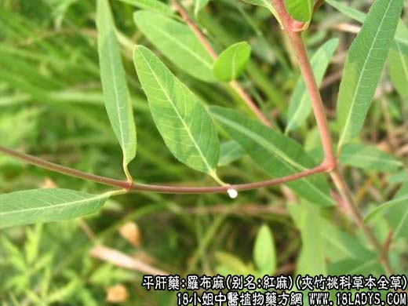

【中药概述】
罗布麻，别名红麻、茶叶花、红柳子、野麻、羊肚拉，为夹竹桃科草本植物罗布麻的全草。苦、甘，凉。归心、肝、肾经。
1．平肝安神：用于肝阳或肝火亢盛的头痛、眩晕，烦躁失眠，可单用代茶饮，或与夏枯草，野菊花，钩藤等同用。
2．清热利水：用于湿热水肿，小便不利，可泡服。
3．强心利尿：用于急慢性心功能不全，心、肝、肾性水肿。
【药效鉴别】
罗布麻清热凉肝逆火，有稳定可靠的降压作用。
【临证应用】
1.治疗高血压。每日用罗布麻3～6g，开水泡当茶饮，或早晚定时煎服；
2.治疗水肿。以罗布麻15g，水煎服，每日2次。
【化学成分】
含槲皮素、异槲皮甙、芸香甙、儿茶素、蒽醌、谷氨酸、丙氨酸、缬氨酸、氯化钾等。
【用量用法】
10——30g，水煎服，或入丸、散剂。
【使用注意】
时见消化系统症状如肠鸣、腹泻、食欲差，甚至呕吐，用于利尿时注意补钾。